Deploy long running services on Marathon
Using Marathon web UI¶
Now, let’s start using the Marathon GUI. Click on Create Application:
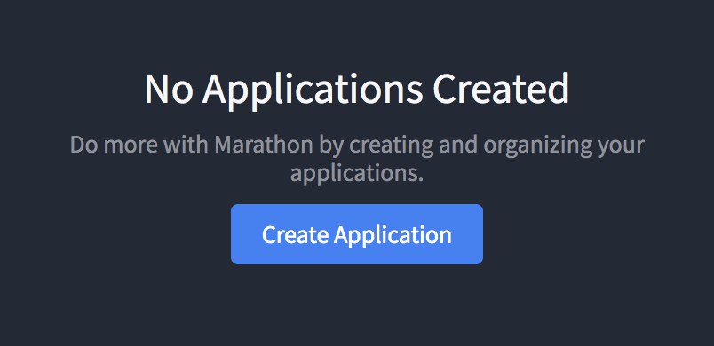
We are presented with a window in which we can name and configure an application to run in Marathon.
Let's try to deploy the application packaged in the nginxdemos/hello docker image.
Note
This image allows to run a NGINX webserver that serves a simple page containing its hostname, IP address and port as wells as the request URI and the local time of the webserver.

Change the Network field value to Bridged:
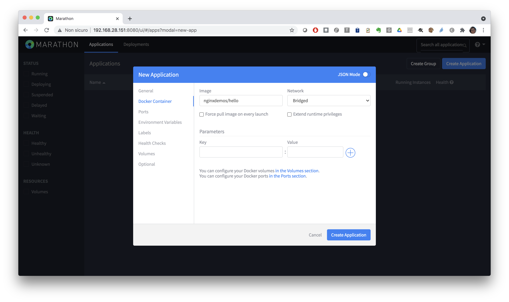
and specify the port 80 in the Ports tab in order to map the container port 80 (where nginx is listening inside the container) to a host port.
Note that if you click on the Json Mode switch on the top right corner of the Application window you can see the json definition of your application:
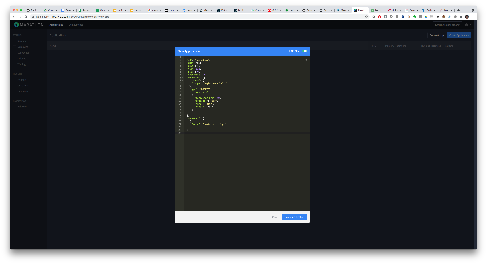
Then click on Create Application.
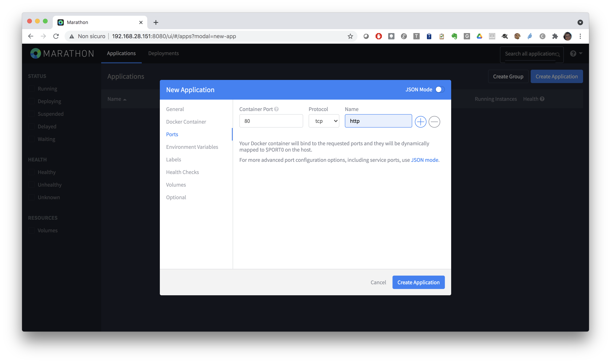
In a few moments you will see your application running.
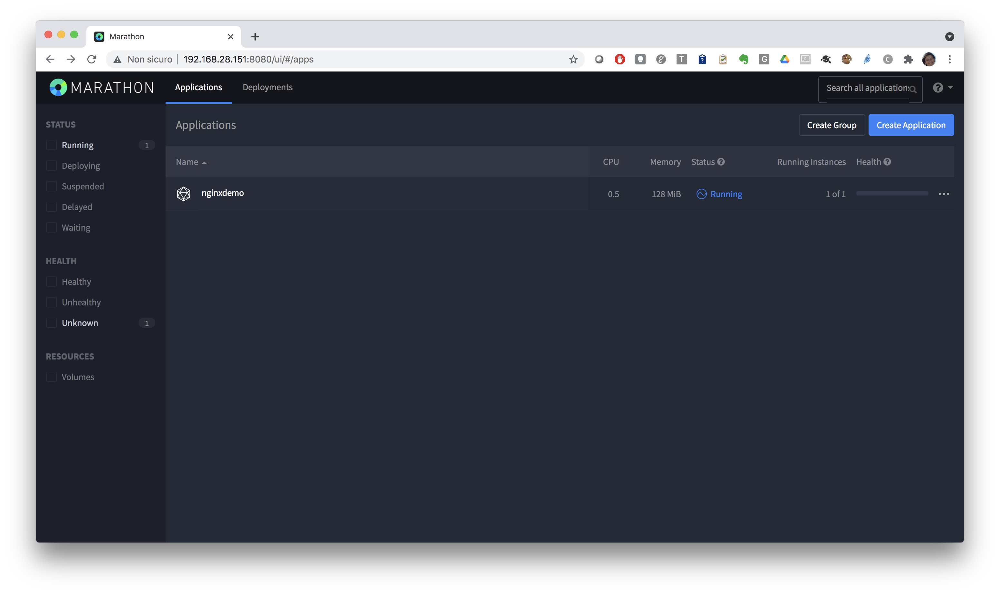
Click on the name of the application in order to access the application details and menu:
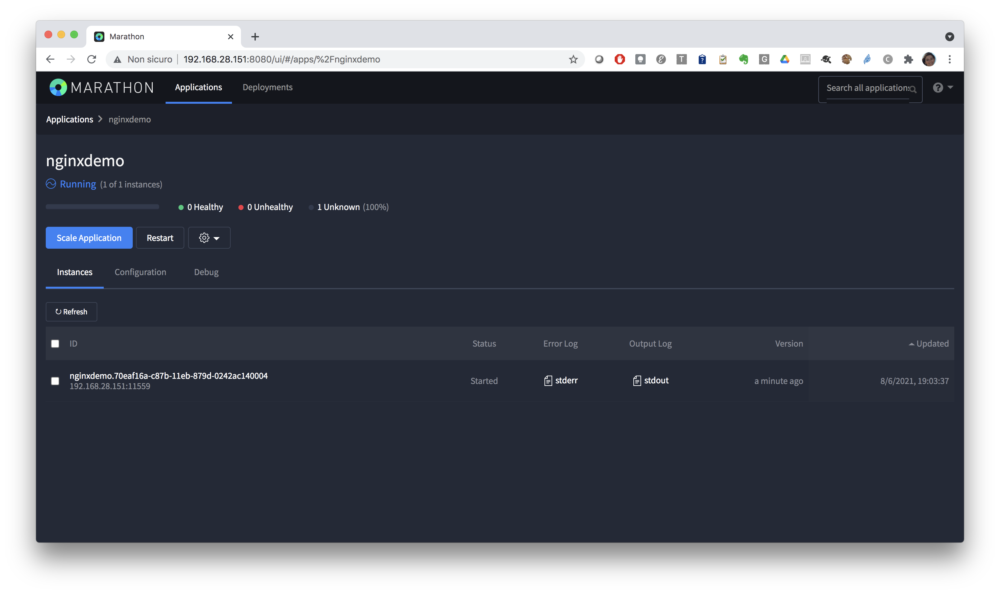
Under the instances tab you can see the ID of your application instance and the IP:portURL to access the deployed service. Click on it and you will access the demo web server:
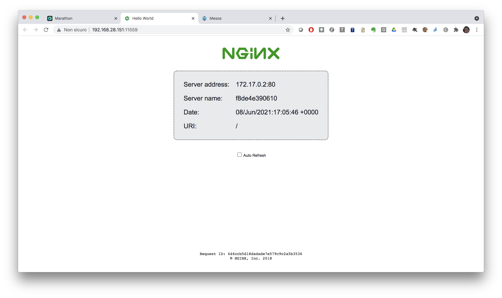
Now move to the Mesos web UI (port 5050): you can see your running container under the Active Tasks window:
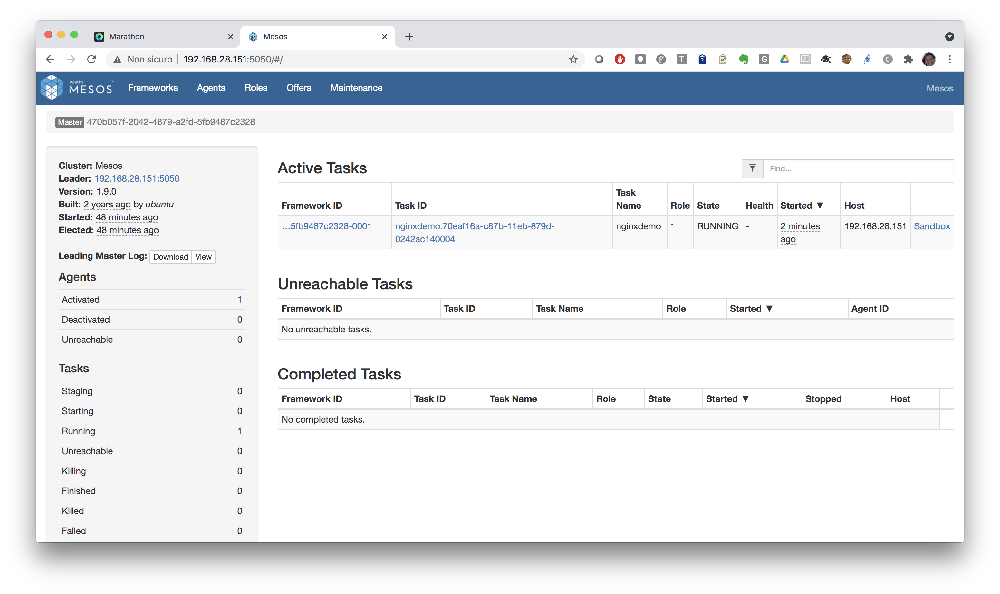
Clicking on the Sandbox link you will browse the container sandbox and read the stdout and stderr files:
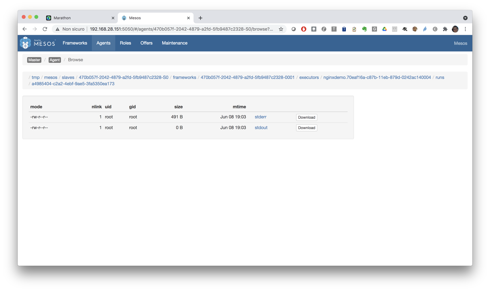
Finally you can destroy your application:
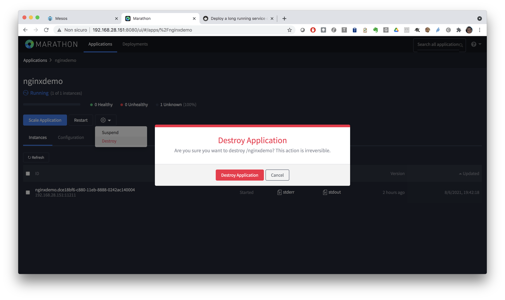
Scaling and load-balancing¶
Reference
Take a look at the official docs: https://mesosphere.github.io/marathon/docs/service-discovery-load-balancing.html
When your app is up and running, you need a way to send traffic to it, from other applications on the same cluster, and from external clients.
In your mini-cluster Marathon-lb provides port-based service discovery using HAProxy, a lightweight TCP/HTTP proxy.
Adding the label HAPROXY_GROUP=external to your application, you will expose your app on the Load Balancer (LB): services are exposed on their service port as defined in their Marathon definition.
Let's create again our application from nginxdemos/hello docker image, but this time we will add the label HAPROXY_GROUP:
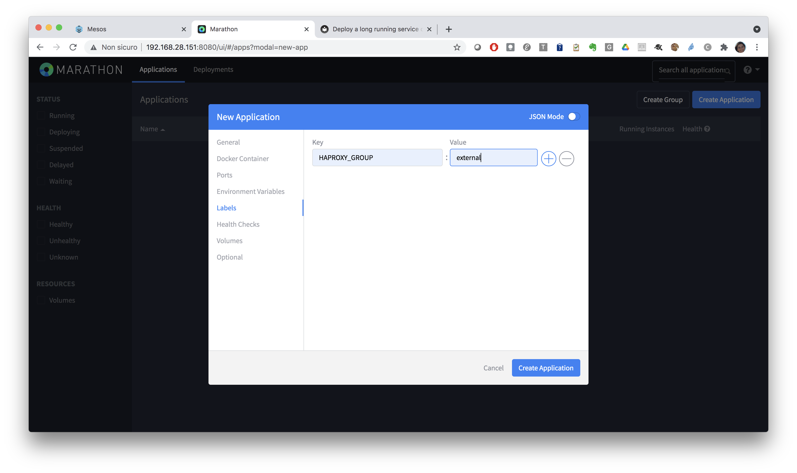
Looking at the app Configuration we can see the service port assigned to our service (in this case it was 10000).
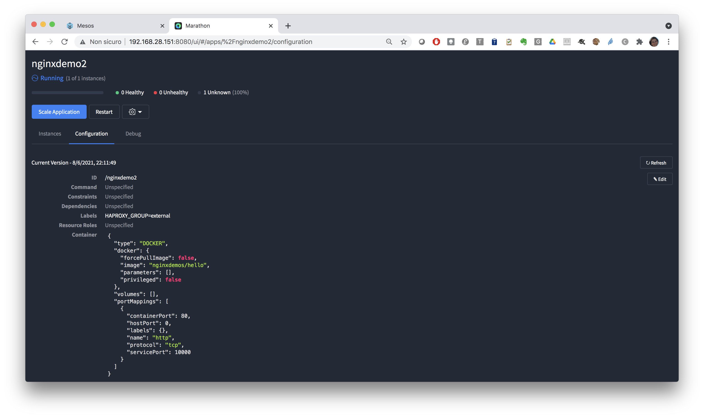
Connect to the service port on your host: you will see the web server main page.
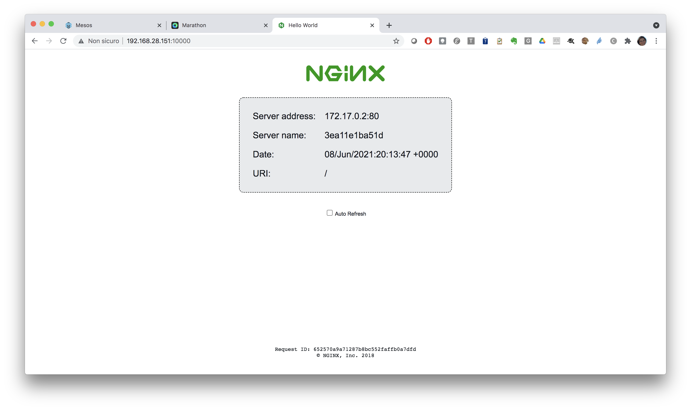
Now let's scale our application in order to have 2 instances of the web server:
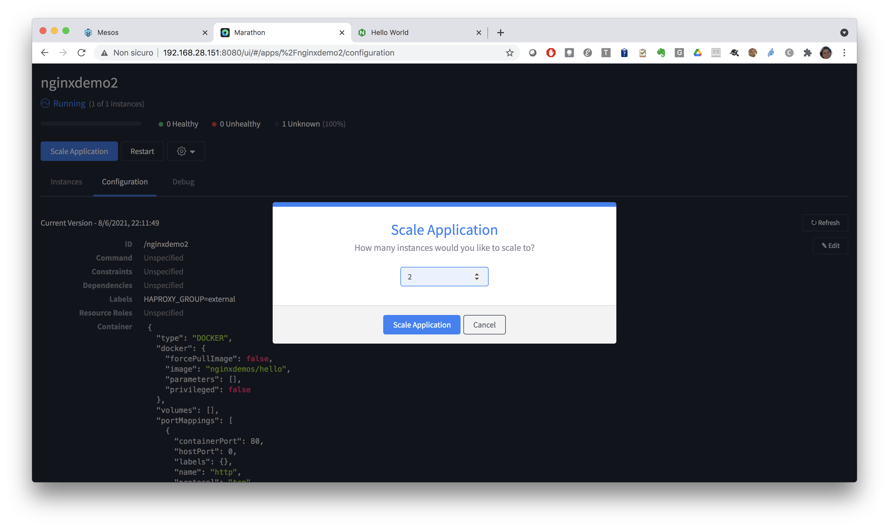
As you can see now we have two running docker containers, using two different host ports (11436 and 11849), but we can still use the service port 10000 managed by our Marathon-lb: client requests will be forwarded to each instance in turn.
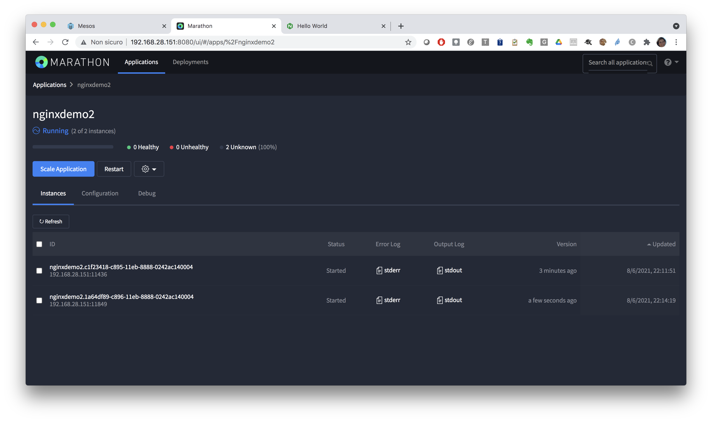
You can verify that using the following command:
curl --silent "http://192.168.28.151:10000"|grep 'name'
Warning
Replace the IP 192.168.28.151 with your VM IP and the port 10000 with the service port shown in the application Configuration tab.
You will see the following behaviour showing that the requests are managed by the two containers in turn:
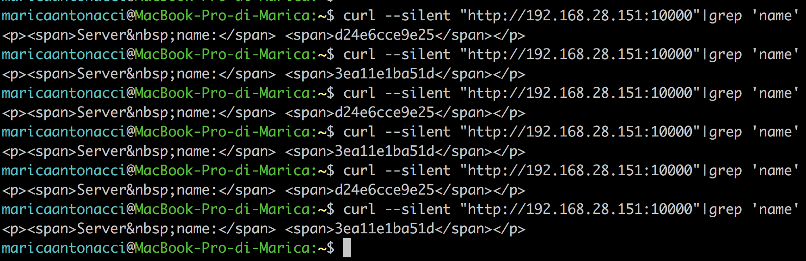
Marathon REST API¶
The following table reports the main API endpoints:
| API Endpoint | Description |
|---|---|
| /v2/deployments | Query for all running deployments on a Marathon instance ('GET') |
| /v2/deployments/ |
Query for information about a specific deployment (GET) |
| /v2/apps | Query for all applications on a Marathon instance (GET) or create new applications (POST) |
| /v2/apps/ |
Query for information about a specific app (GET), update the configuration of an app (PUT), or delete an app (DELETE) |
| /v2/groups | Query for all application groups on a Marathon instance (GET) or create a new application group (POST) |
| /v2/groups/ |
Query for information about a specific application group (GET), update the configuration of an application group (PUT), or delete an application group (DELETE) |
We will be using these endpoints in the following sections.
Application groups¶
Application groups are used to partition applications into disjoint sets for management. Groups make it easy to manage logically related applications and allow you to perform actions on the entire group, such as scaling.
Marathon takes dependencies into account while starting, stopping, upgrading and scaling.
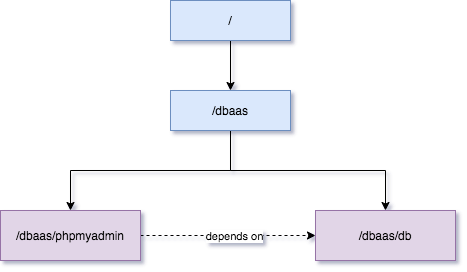
Here is the json definition of this application group:
Warning
Replace the value of the env var PMA_HOST at line 52 with your VM IP.
1 2 3 4 5 6 7 8 9 10 11 12 13 14 15 16 17 18 19 20 21 22 23 24 25 26 27 28 29 30 31 32 33 34 35 36 37 38 39 40 41 42 43 44 45 46 47 48 49 50 51 52 53 54 55 56 57 58 59 60 61 62 63 | |
Look at the definition of the application group:
-
in both applications we have set some environment variables (json tag
env):MYSQL_ROOT_PASSWORD,MYSQL_USER,MYSQL_PASSWORDare set for the first applicationdb: these environment variables are required by the Officialmariadbdocker image;PMA_HOST,PMA_PORTare set for the second applicationphpmyadmin: these environment variables are required by the Officialphpmyadmindocker image.
-
the
phpmyadminapp depends on thedbapp: the dependency is defined at lines 48-50- this services communicates with the
dbusing the service port (10006) defined at line 14.
- this services communicates with the
Save the json above in a file, e.g. dbaas.json, and deploy it using the /v2/groups endpoint:
curl -H 'Content-Type: application/json' -X POST http://localhost:8080/v2/groups -d@dbaas.json
Through the Marathon web UI you can monitor your deployment:
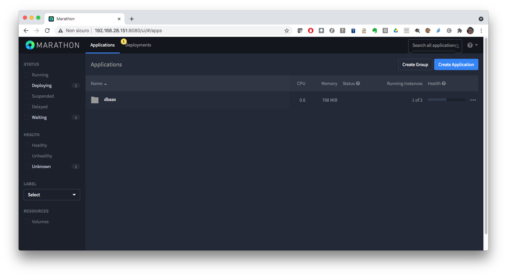
Click on the dbaas folder to see the applications of the group:
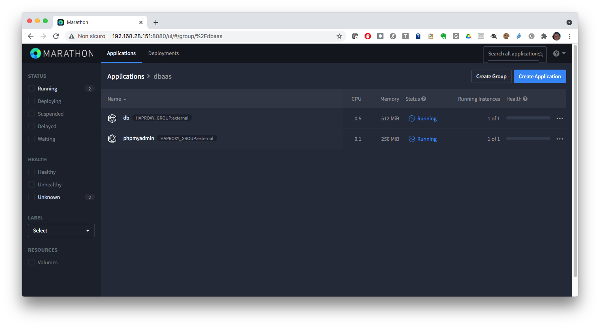
When they are running you will be able to access the phpmyadmin web tool on port 10008 of your VM:
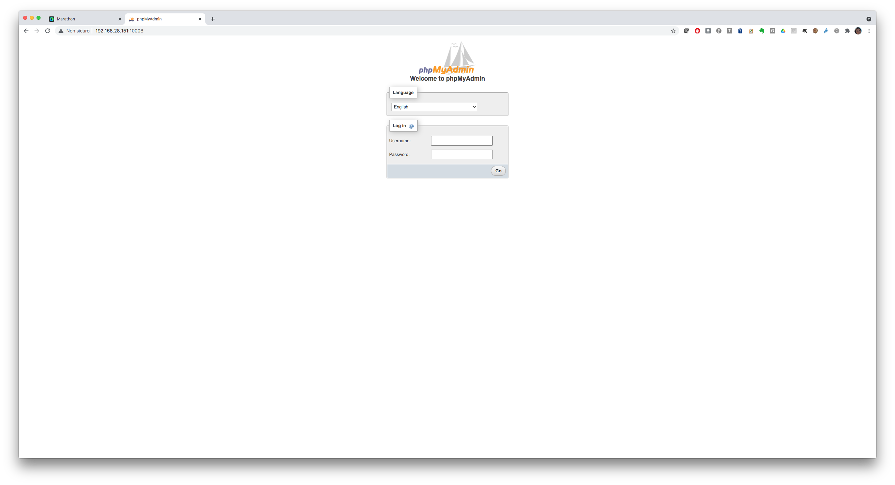
Use the root credentials to access the administrative panel of the DBMS (username root, password as set in the json at line ):
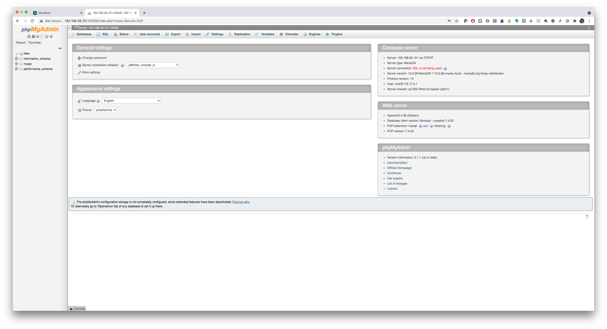
Let's create a new database test:
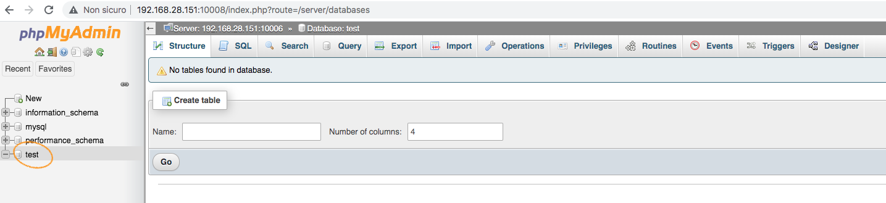
The new database has been stored in the db container...What happens if you restart the db app?
Click on button Restart in the db application menu:
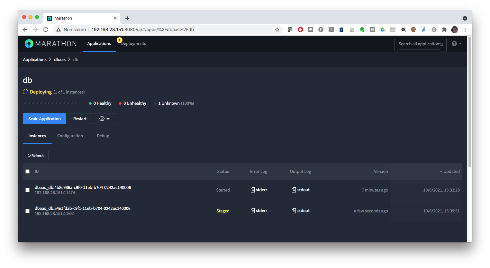
Marathon creates a new instance of our application, that means a new container; once the new container is up and running the old one is destroyed.
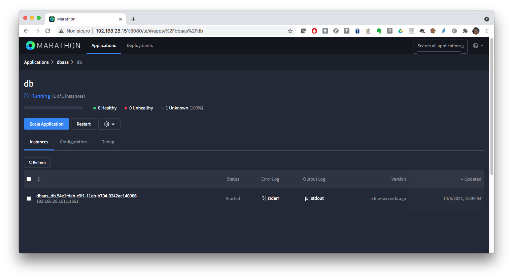
Since the database test was stored in the old container, we lose our data:
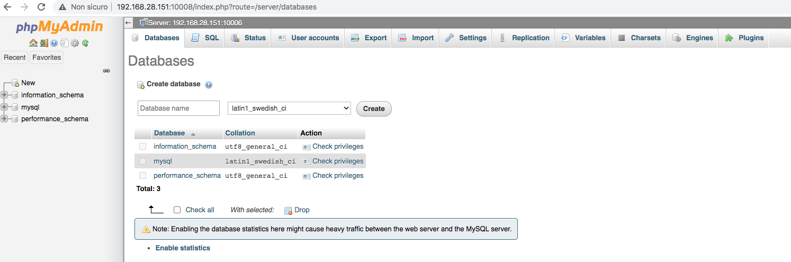
Using local storage¶
Modify the json definition of the db application to request a volume:
1 2 3 4 5 6 7 8 9 10 11 12 13 14 15 16 17 18 19 20 21 22 23 24 25 26 27 28 29 30 31 32 33 34 35 36 37 38 39 40 41 42 43 44 45 46 47 48 49 50 51 52 53 54 55 56 57 58 59 60 61 62 63 64 65 66 67 68 69 70 | |
19-25 define a bind-mount volume:
docker inspect $(docker ps -q --filter ancestor=mariadb:10.3)
...
"Binds": [
"/tmp/mysql:/var/lib/mysql:rw",
"/tmp/mesos/slaves/692a979a-a998-4dd4-b059-8da9bfdf706d-S0/frameworks/692a979a-a998-4dd4-b059-8da9bfdf706d-0001/executors/dbaas_db.cb02ea99-cc5e-11eb-b551-0242ac140004/runs/34b09a76-9558-4429-bf56-61aeb8d0713a:/mnt/mesos/sandbox"
],
...
Update your deployment with a PUT request:
curl -H 'Content-Type: application/json' -X PUT http://localhost:8080/v2/groups -d@dbaas.json
Now repeat the steps describe above: create a database and then restart the db application (you can use the Marathon web ui).
The database will survive if the db container is re-created.
Note that this is not sufficient to ensure data persistence for your applications. In a multi-node cluster, if the node where your container is running fails, it will be re-deployed on another node and it will not find the data stored previously.
In order to make your apps more fault-tolerant, you can use an external storage service, such as Ceph or Amazon EBS, to create a persistent volume that follows your application instance.
This topic is beyond the scope of this basic tutorial. See the docs for more details.
Health checks¶
Using the web UI click on the Health Checks tab to setup your checks:
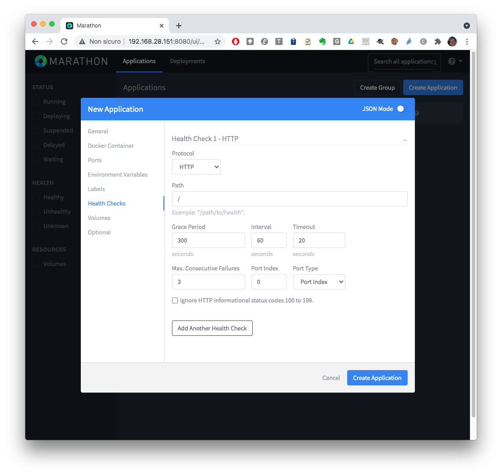
Using the REST APIs add the healthChecks definition in the application json as in the following example:
{
"id": "nginx",
"cpus": 0.25,
"mem": 128,
"disk": 0,
"instances": 1,
"container": {
"docker": {
"image": "nginx"
},
"type": "DOCKER",
"portMappings": [
{
"containerPort": 80,
"protocol": "tcp"
}
]
},
"networks": [
{
"mode": "container/bridge"
}
],
"healthChecks": [
{
"protocol": "HTTP",
"path": "/",
"portIndex": 0,
"gracePeriodSeconds": 300,
"intervalSeconds": 60,
"timeoutSeconds": 20,
"maxConsecutiveFailures": 3
}
]
}
If the checks are passed, the application status will be healthy and you will get a green bar near your instance:
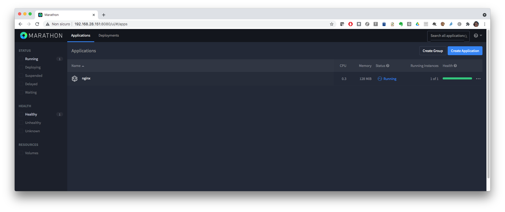